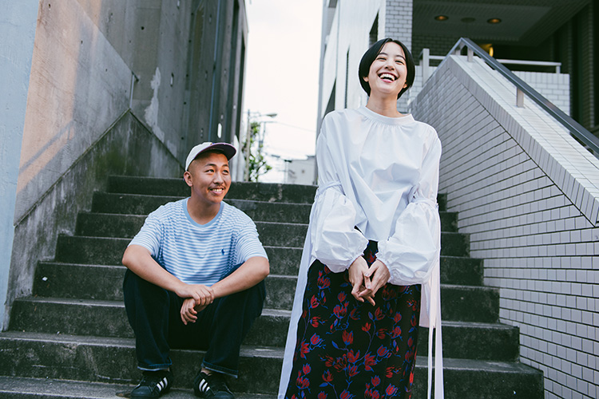
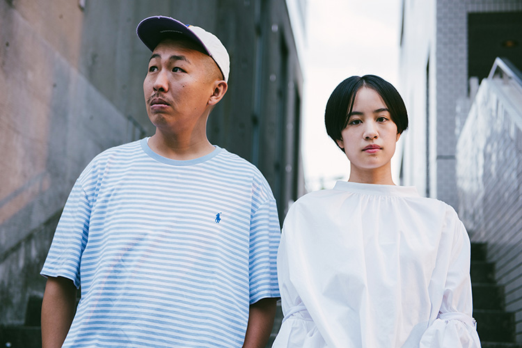
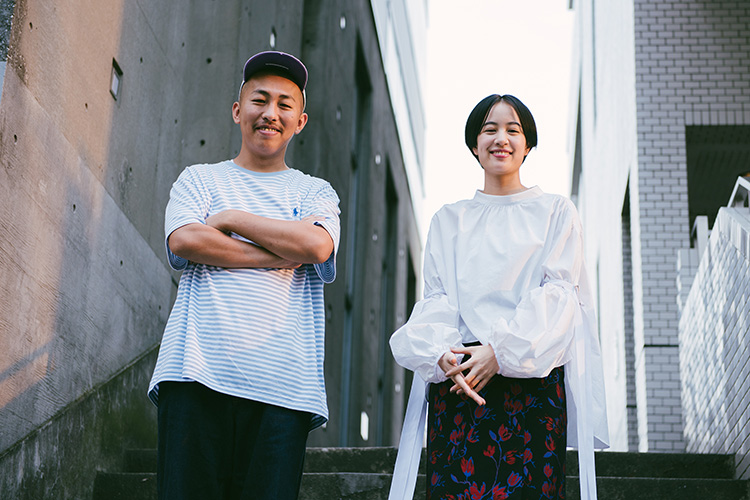

これまでに発表した『Playback』『THE COCKPIT』など革新と方法意識に満ちた作風で、熱心な映画ファンの心を掴んできた三宅唱監督が、夭逝した作家･佐藤泰志の小説原作の映画化企画4作目となる『きみの鳥はうたえる』を新たな監督作に選んだ。少し意外にも思えたこの取り合わせは予想を遥かに上回る、等身大で自然体でありながら、新しい感覚の青春映画を私達に届けてくれた。このかけがえのないひと夏の日常譚にて、柄本佑、染谷将太という三宅監督が信頼を置く俳優と共に、ヒロインの佐知子役として眩いアンサンブルを織りなすのが、昨年、新人としてスクリーンで最も輝きを放った、石橋静河。演じるという仕事を模索していた時期に出会い、短編作品で既にセッションしていた２人が、本作が生まれた現場でのことをたっぷり語ってくれた。
自分の感覚は全て消してやっていかないといけないと迷っていた時期に監督と話をして、自分の感覚を全く否定されなかった。（石橋）
『密使と番人』（2017）、それ以前も『NAGAHAMA』(2016)、『八月八日』(2016)など、石橋さんは三宅監督の短編作品で既に印象的な演技を披露しています。これら短編の出演の経緯から聞かせてください。
三宅：
僕が石橋さんに最初に会ったのは、2016年の４月だったかな？
石橋：
はい、確かそうでしたね。
三宅：
春だった。映画プロデューサーの佐藤公美さんに紹介して頂いたんですけど、『きみの鳥はうたえる』の準備が少しずつ進んでいる頃でした。佐知子という魅力的なキャラクターを誰が演じられるだろう、誰と一緒に作りあげようと考えていた段階で。そういう絶好のタイミングでの初対面でした。『PARKSパークス』（2017）や『夜空はいつでも最高密度の青色だ』（2017）の撮影より前だったから、これから映画に真剣に取り組んでいこうと思い始めた頃……って言っていいのかな？
石橋：
そうですね。今よりももっと、お芝居が未知の世界のものでした。舞台（NODA MAP『逆鱗』）をちょうど終えたばかりで、『PARKS パークス』（2017）の撮影の準備期間だったと思います。
三宅：
そうだ、『逆鱗』を観てから会いに行った。『NAGAHAMA』は、ちょうど『PARKS パークス』の撮影に入る直前に、一緒に作った短編で。
石橋さんのキャリアが始まった当時から今に繋がっているわけですね。これらの短編は今作にとってどのような存在なのでしょうか？
三宅：
佐知子は、いろんなことに誠実に向き合おうとしている人でもあるし、時には伸び伸びと奔放に振る舞うような人で、そういう佐知子の魅力をちゃんと撮らないと映画化する意味なんてほとんどないと思っていたくらいです。『きみの鳥はうたえる』は、主人公の「僕」、佐知子、静雄の３人をどれだけ魅力的に描けるかに掛かっている。とにかく、俳優が生き生きとしている映画にしたいとイメージしていて、そんな折に石橋さんと会えた。それで石橋さんと、カメラの前でのびのびするためには何をしたらいいのか、お互いに色々と試すような機会として、短編を撮ることになりました。発表するあても特になく。
その段階で、佐知子を踏まえたものだったんですか。
三宅：
僕の中ではある程度そうですが、そんなにはっきりはしていなかったし、正式な形でキャスティングが決まっていたわけではないので、石橋さんにも伝えてはいないですね。とりあえず仕事をする前に、例えば椅子に座って変に畏まって話すという形ではなくて、カメラという道具を使って一緒に遊んでみようよ、と。監督と役者の違いなんて、あえて言えばカメラを挟んでいるだけ、役者と監督は同じ空間にいる。短編を一緒に作りながら、僕としては今まで出会ったことがない人だなって思ったし、今まで自分がやってきたこととはまた違う面白さがあるモノをこれから作ることができそうだな、と感じました。

石橋さんから見て、最初に会った三宅監督はどんな印象だったんですか？
石橋：
その当時、「映画監督」という方達がどういうものなのか自分の中に前例があまり無くて。固定観念なくお会いしたら、近所の兄ちゃんみたいな感じの柔らかい雰囲気の人で…すいません（笑）
三宅：
大丈夫、大丈夫よ（笑）
石橋：
あれ、こんなに気さくに色んなことを話せるものなのかってまずビックリしたんです。自分はこれまでずっとダンスをやってきて、お芝居よりダンスで培った感覚の方が圧倒的に強くあって、これからお芝居の仕事をやっていく上で、自分の持っている感覚は全て消してやっていかないといけないと迷っていた時期でもあったんですけど、監督と話をして、その自分の感覚を全く否定されなかった。「それは面白いかもね」って肯定してくれて、それがまず嬉しかったんです。短編を撮ることになった後も「一緒に面白いことをしましょう」って常に言われていました。
三宅：
映画はこうでなければならないと考えていた時期が僕にもあって、でもある時から映画ってもっと器がデカい、自由なものなんじゃないか、と思うようになって。素晴らしい映画は過去の映画史に沢山ありますし、それを真似しても仕方がない。表面的ではなく、本質的に何か新しいことにチャレンジしたい。そうすることで映画っていう器も広がっていくんじゃないかって思うんです。今、石橋さんが僕に否定されなかったって話をしたけど、否定する気なんて当然なくて。自分勝手な言い方をすれば、石橋さんとのやりとりを通して、僕も映画や演出について新しく考えられる機会だなって。
短編から通じて、石橋さんの個性が随所で活かされている印象があります。ダンスもですが、劇中でカラオケを歌うシーンも説得力ある歌声で驚きました。
三宅：
ダンスや歌にしても、僕がやって欲しい所作を目指すという流れでは全くなくて、単に、石橋さんの中に変な迷いがないかどうか、集中できているかどうか、こっちが笑っちゃうくらい楽しんでいるかどうかを見て、素直に感動したらOKを言う、ってことだけが僕の役割で。いやあ、クラブもカラオケもいいですよねえ。２０代男女が貧乏な生活の中でどう楽しみを見つけていくかって物語として、僕は原作小説を受け止めたのですが、じゃあ、僕たち自身は、金も大して持っていない中で、普段の日常で何をして楽しんでるっけ？ と考えてみた。「散歩するよね。飯は食うよね。たまにはできれば、ライブ行って大きい音でちゃんと音楽聴いて、体動かしたりもしたいよね。疲れてるけど」って。小説は８０年代の設定なので、遊び場がジャズバーだったりするんですけど、それを現代に置き換えていったんです。

雨さえ降らなければいいね、晴れたらいいね、と願うような天気に左右されてしまう人間の心が描かれているなって思った。（三宅）
男女の三角関係を描いた物語は、小説や映画に限らず過去から現在まで数多くあったと思うんですが、この映画には、理屈無しに人が人に惹かれ、理屈無しに移動していく様が、まさに理屈無しに映し出されていました。石橋さんに、佐知子にフォーカスした質問なんですが、佐知子は主人公の「僕」のどこに惹かれ、また静雄のどこに惹かれたと思いますか？
石橋：
２人の魅力は、（柄本）佑さんと染谷（将太）さんがどうやって其々を演じるのかによって変わってくると思ったので、佐知子が２人のどこに惹かれたのかは考えずに現場に行ったんですけど、う〜ん、現場には本人の性格を踏まえつつ、役を通した２人がいて、でもそれが役なのか本人なのか分からない不思議な感じで進んでいく中で、佐知子の気持ちについて現場で感じることが沢山あったんです。でも佐知子は理由があって好きになったわけじゃないとも思っていて、逆に理由が無くていいというか。かといって単にフラフラしている女の子ってわけでもなくて。これをどうやったら誠実に伝えられるのかずっと考えていて、ちょうど撮影中に聴いていた曲が佐知子の心情とリンクすることがあって、それで腑に落ちるところがあって。
差し支えなければ、曲を聞いてもいいですか？
石橋：
ジョニ・ミッチェルの「A Case Of You」って曲なんですけど、その曲を聴いて、理由や理屈は要らないと思ったというか、目の前に素敵な人がいたからその人と一生懸命向き合って、その次にまた素敵な人が現れて、その人と一生懸命向き合った結果、この映画で描かれる形になったけど、それは誰かに対して誠実じゃなかったということではなくて、ただただ目の前にいる人と向き合って、自分とも向き合った結果なんだなって。それでいいな。そう思ったんです。
三宅：
体で感じるものを信じることが重要ってことを石橋さんはじめ、役者達から僕が学ばせてもらったような思いがあります。確かに言葉に出来ることは映画にしなくてもいいんです。ジョニ・ミッチェルも歌詞だけではなくて、そこにメロディを付けて、楽器を奏でて、歌声の震えに乗せないと本当に表現したいことに到達できないから、歌うことを選んでいる、たぶんだけど。僕も例えば、140文字のTwitterで表現出来ることなら、映画なんて面倒な手段をわざわざ選ばない。たぶん映画以外の芸術も同じで、石橋さんにとってはダンスが言葉にならないものを表現する方法の手掛かりになったと思うし、それがこの映画にとっても強力な礎になりました。僕自身も現場で、論理的な言葉を使って理路整然と喋る、みたいなことでは全然なくて。一緒にいるだけ。
石橋：
そうですね。もし喋っていたら、こういう映画になってないですよね。この登場人物はこんな状況だからこうなるんだよってもし言われたら、それに向かっていこうとして、まず頭で理解しようとするから、どんどん答えが少なくなっていくけど、この映画ではグルグル遠回りしながら辿り着きたかったこところに辿り着くような感覚があったので、とても贅沢なことだったなと思います。

これまでの佐藤泰志の小説を原作とする３部作（『海炭市叙景』、『そこのみにて光輝く』、『オーバーフェンス』）と並べた時、一番違いを感じたのはメランコリックの切り取り方なんです。もちろんこの映画にも原作の持つ憂鬱さや悲痛さはあるんですけど、それがより間接的で感覚的に描かれていて、それが今の世代の感覚に近いと思ったんです。世代感について自覚された部分はあったんですか？
三宅：
俺、これ喋っていい？
石橋：
どうぞ（笑）
三宅：
これまで佐藤泰志さんの小説を映画化してきた、函館シネマアイリスという映画館を運営されている菅原プロデューサーから最初に映画化の話があり、その際に、この物語をベテランの監督にオファーする選択肢もあるだろうけど、今回は登場人物の年齢に極めて近い三宅唱という監督にオファーしたいし、そのようにして撮られるべき物語だと思う、と言われたんです。その言葉の意味を考えながら映画を作っていく中で、必然的に「今」の感覚が求められていると思ったし、菅原さんは最後まで世代の違う僕のその感覚を信じてくれました。「今」の感覚と言っても大袈裟なものではなくて、毎日生活しているときの自分の感覚、それを貫き通そう、と。その感覚で繰り返し小説を読んでいると、確かに金のない人たちの生活ではあるのだけど、なんだか羨ましさすら感じたんですよね。貧乏なんだけど、そこで何かを諦めるんじゃなくて、ちゃんと映画みて、本読んで、友達と酒のみにいって。眩しいな、と。そういうことの喜びとか楽しさがちゃんと当たり前に存在している、それが映った映画にしたいと思いました。あるメランコリックさから距離をとっているように見えたのだとしたら、そのあたりに理由があるかもしれません。
石橋さんは原作、また脚本を読んで、何を感じましたか？
石橋：
先に原作を読んでいたんですけど、私は匂いのある小説だと思いました。花の匂いとか、汗でムッとしている部屋の匂いとか、情景が浮かんでくるような生っぽい匂いのある印象があったんです。監督の書かれた脚本を読んで、物語の中の出来事は削ぎ落とされてシンプルになっているけど、原作から感じた生っぽい匂いは映画になっても残るんだろうなって確信はありました。
原作で静雄に起こる事件に対しての解釈も、三宅監督らしいと思いました。
三宅：
原作を読んで、静雄の事件にまつわることで僕が面白いなと思ったのは、静雄が母親を見舞いに行った後に、「僕」と佐知子が「雨が降っていないといいな」って２人で話すところなんです。でも雨が振ってしまう。そして、事件が起きる。人の感情って、天気如きに左右されない時もあれば、平気で天気に左右されることもあると思うんですね。意外と軽いというかタフというか、それによって救われていることもきっと沢山ある。この小説では雨さえ降らなければいいね、晴れたらいいね、と願うような天気に左右されてしまう人間の心が描かれているなって思ったんです。シナリオを書く時に、「晴れろ！」と思いながら書いていました。晴れたかどうかは、皆さんに実際に映画を観て確認して欲しいですけど、僕はそう思ってこの映画を撮りました。

あのメンバーで、あの状況で、あの環境で、あの時間を共有した結果なんです。それってすごくオリジナルなことですよね。（石橋）
内容に触れない程度に、強く印象に残るラストシーンの石橋さんのラストカットについても伺っていいですか？
石橋：
あのシーンは実際にすべての撮影の最後に撮ったんです。
三宅：
僕がOKを出した瞬間、全部終わってもう二度と彼らを撮影できなくなる、みたいなことを考えると寂しくなるから、考えないようにしてた。
石橋：
このシーンを撮る直前に監督から、「これまでの撮影のことを思い出して」みたいなことを確か言われたんです。言いましたよね？（笑）
三宅：
言った？言ったと思うわ。うん、言いましたよ（笑）
石橋：
それを言われた後に、「A Case Of You」とはまた別のジョニ・ミッチェルの曲が頭の中に流れてきたんです。そしたら、それまでの撮影のことが走馬灯のように蘇ってきて。あの状況でどうしたらいいか分からない佐知子の気持ちに変わりはないんですけど、私自身としてはそういう心の状態であの場所に立っていました。
三宅：
最後に撮ることが本当に重要だったんです。僕がした演出ってそれぐらいというか、このチームのスタッフ全員でこのシーンは最後に撮るでしょ、と当たり前のように話していたから、全員が監督だった。それくらい狙いが明確だったので。しかもこのシーンも晴れなきゃいけないと思っていたんですよね。とにかく、この最後の場面こそ、言葉で説明なんて出来ないです。もし実際に佐知子という女性が実在したとして、あの状況で何を考えていたのか訊かれてもきっと答えられないと思うんです。だったら演じ手だって答えようがないし、シナリオを書いた僕だって答えられない。シナリオには手がかりのようなものだけ書いたけど、あくまで手がかりで。喜怒哀楽なんて言いますけど、当然、感情はそんな４種類だけには分けられないですから。
石橋：
そうですよね。
三宅：
たまに文房具屋に行くと、あり得ないくらいめちゃくちゃ色の種類のあるクレヨンのセットとかない？
石橋：
ありますね（笑）
三宅：
それよりも人間の感情は複雑ですよね。言葉なんかでは対応できない。めちゃくちゃ色の種類のあるクレヨンのセットって、今、思いついた例えなので、これが相応しいかどうか分からないけど（笑）
石橋：
（笑）
三宅：
でも、そういうことだと思います。
石橋：
ラストシーンに到るまでの撮影だったり、撮影の外でのやり取りだったり、佐知子役に決まってからの監督とのやり取りとか、そういう一つ一つのことが無かったら、ああいう気持ちにはなっていないと思うんです。もし同じ撮影の手順で同じストーリーでやったとしても、他の組には絶対に出来ないはず。ラストシーンだけに限らず、あのメンバーで、あの状況で、あの環境で、あの時間を共有した結果なんです。それってすごくオリジナルなことですよね。絶対に他のルートは無い終わり方だったと私は思います。

佐知子の前に立つ「僕」はどうしようもなく格好悪いけど、格好良くもありました。
三宅：
この物語の一人の観客としての感想になるんですけど、「愛してる」みたいな言葉って、ちゃんと言葉にしなきゃ駄目なんだってことですね（笑）それが格好良い、ってことかどうかはわからないけど。
石橋：
（笑）
三宅：
あともう1つあって、言葉にするタイミングを間違えるとヤバい、ということかな。これはわかりやすくめちゃ格好悪い。この映画を作りながら、「間」について考えることが多かったです。ハッピーな出来事も不幸な出来事も起こるこの世界で、自分の感情を相手に伝えたり、自らの意思で行動することで世の中は変わっていく可能性はある。でもそれだけだったら自分の思い通りの世の中が出来ますよね。世界は相手がいて成立する。だから「間」を間違えると全く通用しない。映画はその両方を撮れると思うんです。個人の意思と、個人の意思とは全く無関係な「間」ですね。人はそれを運命と表現したりするけど、僕は「間」だと思います。